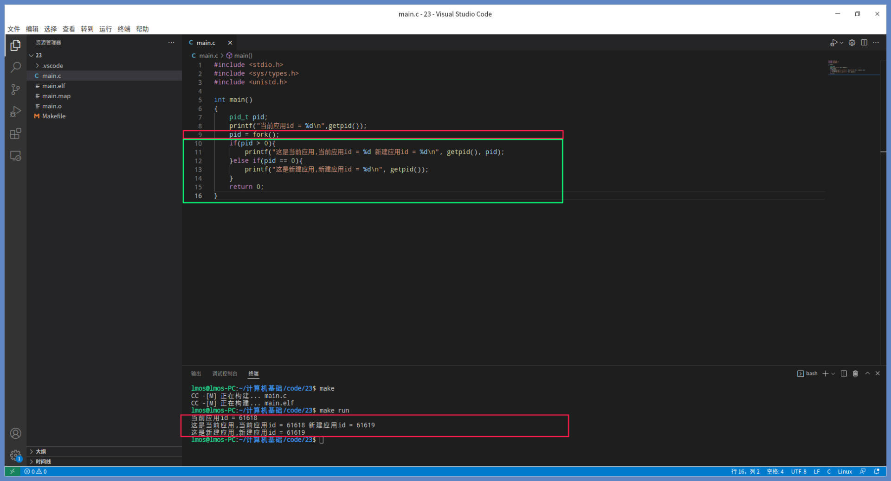
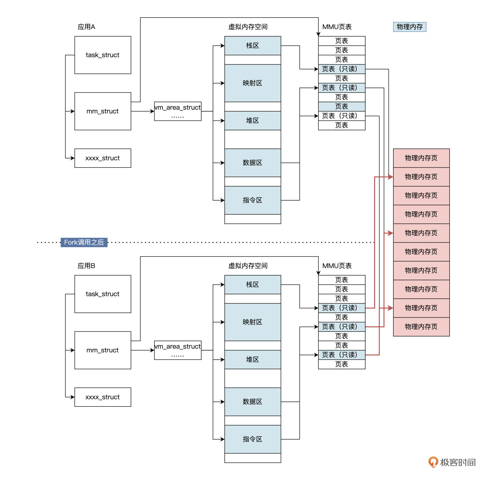
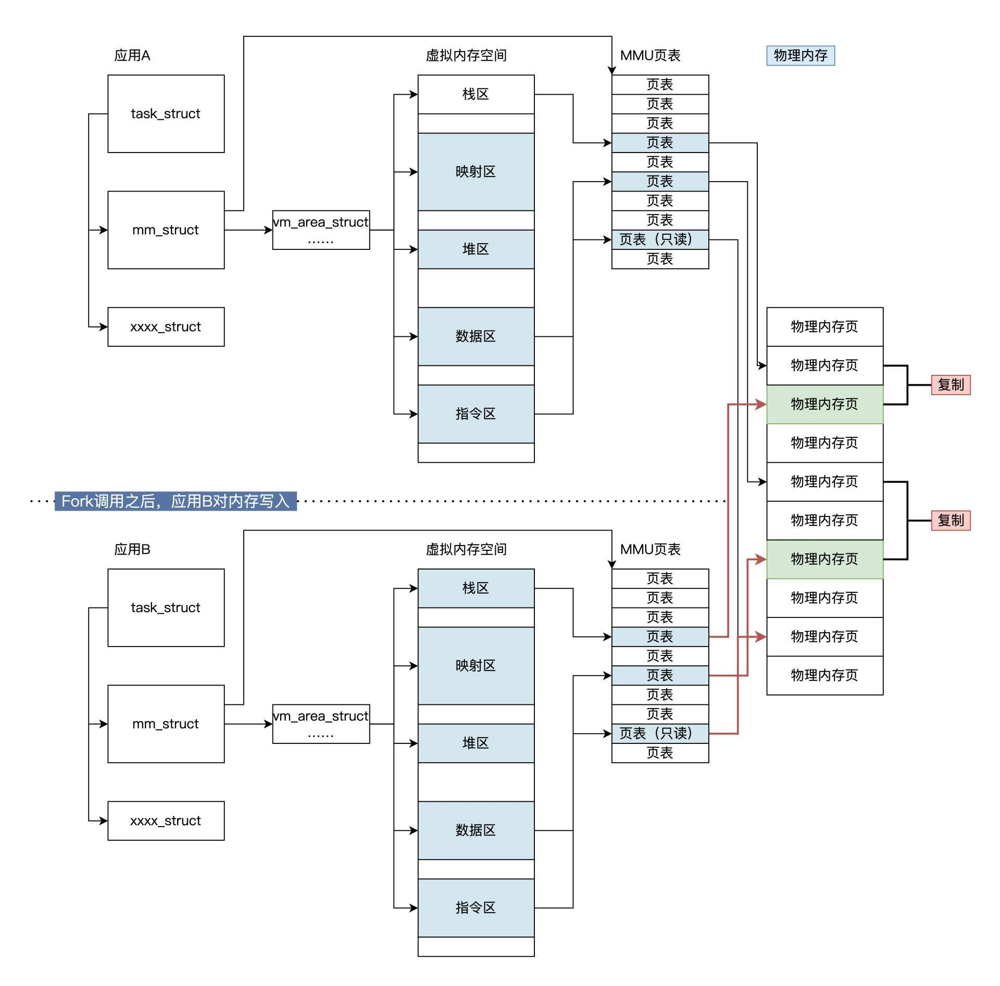
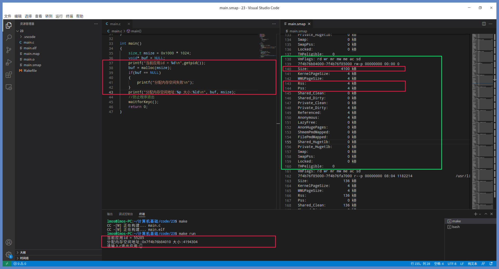
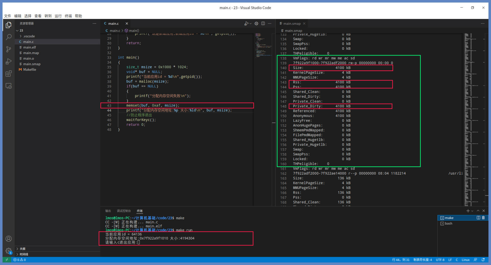
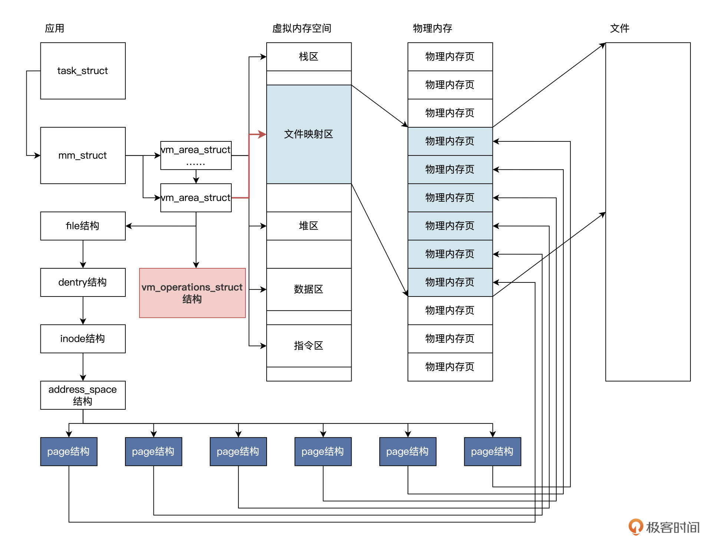
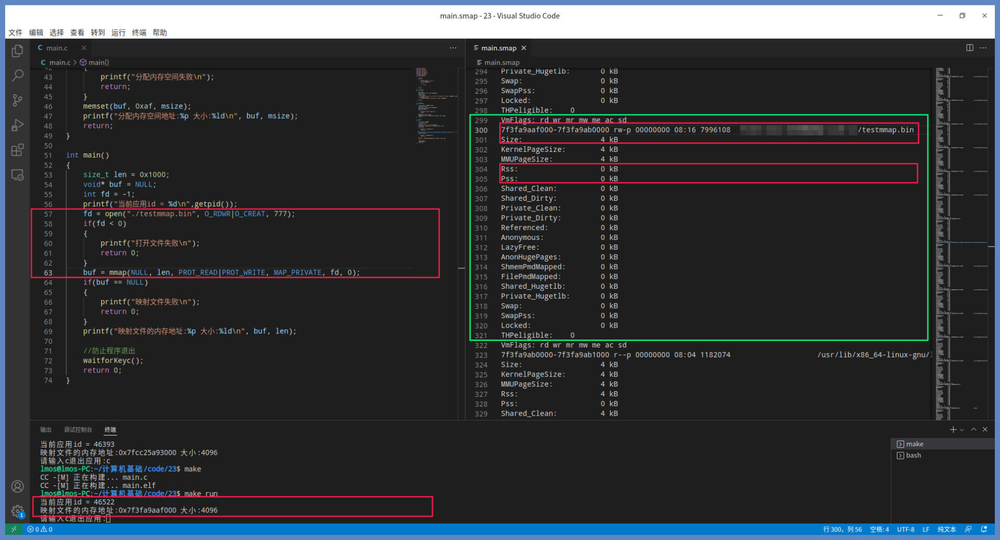
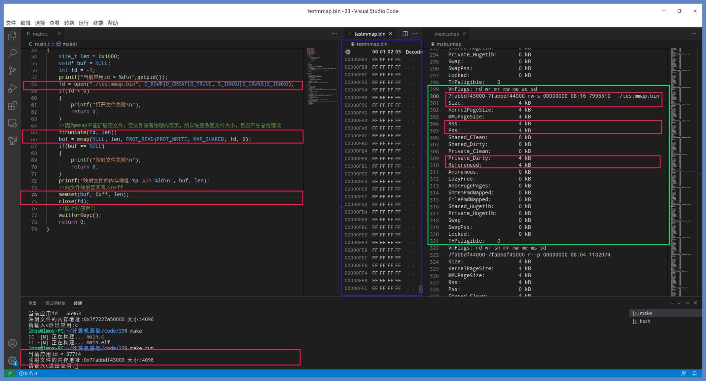
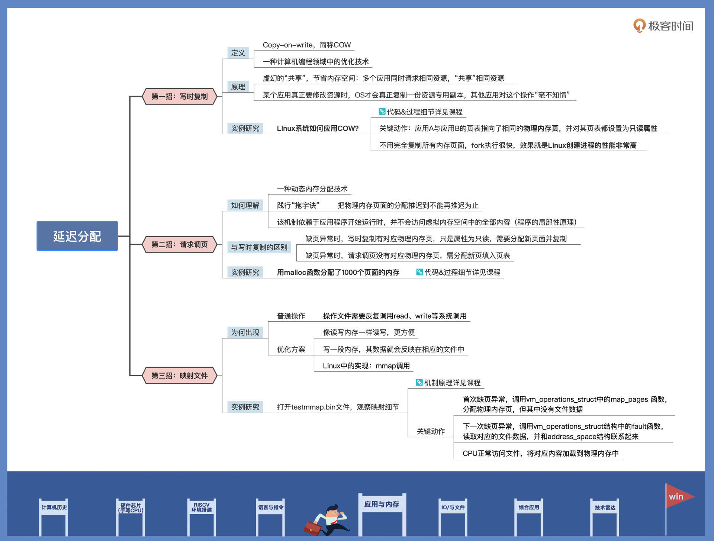

- 00 开篇词 练好基本功，优秀工程师成长第一步.md
- 01 CISC & RISC：从何而来，何至于此.md
- 02 RISC特性与发展：RISC-V凭什么成为“半导体行业的Linux”？.md
- 03 硬件语言筑基（一）：从硬件语言开启手写CPU之旅.md
- 04 硬件语言筑基（二）_ 代码是怎么生成具体电路的？.md
- 05 指令架构：RISC-V在CPU设计上到底有哪些优势？.md
- 06 手写CPU（一）：迷你CPU架构设计与取指令实现.md
- 07 手写CPU（二）：如何实现指令译码模块？.md
- 08 手写CPU（三）：如何实现指令执行模块？.md
- 09 手写CPU（四）：如何实现CPU流水线的访存阶段？.md
- 10 手写CPU（五）：CPU流水线的写回模块如何实现？.md
- 11 手写CPU（六）：如何让我们的CPU跑起来？.md
- 12 QEMU：支持RISC-V的QEMU如何构建？.md
- 13 小试牛刀：跑通RISC-V平台的Hello World程序.md
- 14 走进C语言：高级语言怎样抽象执行逻辑？.md
- 15 C与汇编：揭秘C语言编译器的“搬砖”日常.md
- 16 RISC-V指令精讲（一）：算术指令实现与调试.md
- 17 RISC-V指令精讲（二）：算术指令实现与调试.md
- 18 RISC-V指令精讲（三）：跳转指令实现与调试.md
- 19 RISC-V指令精讲（四）：跳转指令实现与调试.md
- 20 RISC-V指令精讲（五）：原子指令实现与调试.md
- 21 RISC-V指令精讲（六）：加载指令实现与调试.md
- 22 RISC-V指令精讲（七）：访存指令实现与调试.md
- 23 内存地址空间：程序中地址的三种产生方式.md
- 24 虚实结合：虚拟内存和物理内存.md
- 25 堆&栈：堆与栈的区别和应用.md
- 26 延迟分配：提高内存利用率的三种机制.md
- 27 应用内存管理：Linux的应用与内存管理.md
- 28 进程调度：应用为什么能并行执行？.md
- 29 应用间通信（一）：详解Linux进程IPC.md
- 30 应用间通信（二）：详解Linux进程IPC.md
- 31 外设通信：IO Cache与IO调度.md
- 32 IO管理：Linux如何管理多个外设？.md
- 33 lotop与lostat命令：聊聊命令背后的故事与工作原理.md
- 34 文件仓库：初识文件与文件系统.md
- 35 Linux文件系统（一）：Linux如何存放文件？.md
- 36 Linux文件系统（二）：Linux如何存放文件？.md
- 37 浏览器原理（一）：浏览器为什么要用多进程模型？.md
- 38 浏览器原理（二）：浏览器进程通信与网络渲染详解.md
- 39 源码解读：V8 执行 JS 代码的全过程.md
- 40 内功心法（一）：内核和后端通用的设计思想有哪些？.md
- 41 内功心法（二）：内核和后端通用的设计思想有哪些？.md
- 42 性能调优：性能调优工具eBPF和调优方法.md
- 先睹为快：迷你CPU项目效果演示.md
- 加餐01 云计算基础：自己动手搭建一款IAAS虚拟化平台.md
- 加餐02 学习攻略（一）：大数据&云计算，究竟怎么学？.md
- 加餐03 学习攻略（二）：大数据&云计算，究竟怎么学？.md
- 加餐04 谈谈容器云与和CaaS平台.md
- 加餐05 分布式微服务与智能SaaS.md
- 国庆策划01 知识挑战赛：检验一下学习成果吧！.md
- 国庆策划02 来自课代表的学习锦囊.md
- 国庆策划03 揭秘代码优化操作和栈保护机制.md
- 温故知新 思考题参考答案（一）.md
- 用户故事 我是怎样学习Verilog的？.md
- 结束语 心若有所向往，何惧道阻且长.md
26 延迟分配：提高内存利用率的三种机制
你好，我是LMOS。
通过前面的学习，我相信你已经感觉到了物理内存资源的宝贵。为了尽可能有效利用它，操作系统在内存管理上花了很多心思，之前学过的虚拟内存、虚实结合的故事也佐证了这一点。
为了提高内存利用率，还有一些巧妙的机制等待我们探索。今天我就跟你聊聊其中的三种“玩法”，分别是写时复制、请求调页和mmap系统调用。这节课的代码，你可以从这里下载。
写时复制
什么是写时复制呢？用极为通俗的语言可以这样概括：写时复制是一种计算机编程领域中的优化技术（Copy-on-write，简称COW）。
其核心原理是，如果有多个应用同时请求相同资源，会共同获取相同的指针，指向相同的资源。这个资源或许是内存中的数据，又或许是硬盘中的文件，直到某个应用真正需要修改资源的内容时，操作系统才会真正复制一份该资源的专用副本给该应用，而其他应用所见的最初资源仍然保持不变，操作系统使得该过程对其他应用都是透明的。
COW的优点是，如果应用没有修改该资源，就不会产生副本，因此多个应用只是在读取操作时可以共享同一份资源，从而节省内存空间。
关于COW的原理，我们先说到这里。接下来，我们研究一下实际的Linux系统是如何应用COW的。
Linux下对COW最直接的应用就是fork系统使用，fork是建立进程的系统调用，因为我们现在还没有讲到进程，你先把进程当成运行中的应用就行。
在 Linux 系统中，一个应用调用 fork 创建另一个应用时，会复制一些当前应用的数据结构，比如task_struct（代表一个运行中的应用）、mm_struct（代表应用的内存）、vm_area_struct（代表应用的虚拟内存空间）、files_struct（应用打开的文件）等等。
但是创建的时候，并不会把当前应用所有占用的内存页复制一份，而是先让新建应用与当前应用共用相同的内存页。只有新建应用或者当前应用中的一个，对内存页进行修改时，Linux系统才会分配新的页面并进行数据的复制。
光看文字描述你可能还是没法领会，让我们写一个小程序开开胃，代码如下所示：
#include <stdio.h>
#include <sys/types.h>
#include <unistd.h>
int main()
{
pid_t pid;
printf("当前应用id = %d\n",getpid());
pid = fork();
if(pid > 0){
printf("这是当前应用，当前应用id = %d 新建应用id = %d\n", getpid(), pid);
}else if(pid == 0){
printf("这是新建应用，新建应用id = %d\n", getpid());
}
return 0;
}
正如其名字一样，fork代表分叉。这里fork以应用A为蓝本，复制出应用B。因为当fork返回之前，系统中已经存在应用A和应用B了，所以应用A会从fork返回，应用B也会从fork返回。对于应用A，fork返回的是应用B的ID；对于应用B，fork返回的是0，系统通过修改应用B的CPU上下文数据，就能做到这一点。而getpid返回的是调用它的应用的ID。
下面我们运行这段程序，运行结果如下图所示：

图中绿色部分是应用A和应用B都会运行的代码片段。我们看一下运行结果：应用A调用fork返回的pid与应用B调用getpid返回的pid，是完全一样的。这验证了我们之前对fork的描述。
只不过第一个printf函数来自于应用A的运行，而第二个printf函数来自应用B的运行，为什么会出现这种情况呢？
这就是fork的妙处了，fork会复制应用A的很多关键数据，但不会复制应用A对应的物理内存页面，而是要监测这些物理内存的读写，只有这样才能让应用A和应用B正常运行。
我画幅图表示一下这个过程，你看后就更清楚了：

上面的图里，fork把应用A的重要数据结构复制了一份，就生成了应用B。有一点很重要，那就是应用A与应用B的页表指向了相同的物理内存页，并对其页表都设置为只读属性。
讲到这里，你可能会想：“这不是相当于内存共享吗？”这样想对也不对，我们得分成应用写入数据和读取数据这两个情况来讨论。
先看看写入数据会发生什么样的故事。这时无论是应用A还是应用B去写入数据，这里我们假定应用B向它的栈区、数据区、指令区等虚拟内存空间写入数据，结果一定是产生MMU转换地址失败。
这是因为对应的页表是只读的，即不允许写入。此时MMU就会继续通知CPU产生缺页异常中断，进而引起Linux内核缺页处理程序运行起来。然后，缺页处理程序执行完相应的检查，发现问题出在COW机制上，这时候才会把一页物理内存也分配给相关应用，解除页表的只读属性，并且把应用A对应的物理内存页的数据，复制到新分配的物理内存页中。
这个过程，你可以结合后面的示意图来加深理解，这张图描述了COW机制的过程：

观察上图，我给你总结一下写时复制的机制。COW的机制保证了应用最终真正写入数据的时候，才能分配到宝贵的物理内存资源，只要不是写入数据，系统坚决不分配新的内存。
而前面你理解的共享内存，更符合这个情况的是读取数据，比如上图中的应用A与应用B的指令区，这大大节约了物理内存。由于不是完全复制所有的内存页面，所以fork的执行很快，最终效果就是Linux创建进程的性能非常高。
请求调页
搞清楚了写时复制，我们来看看请求调页是怎么一回事儿。
请求调页是一种动态内存分配技术，更是一种优化技术，它把物理内存页面的分配推迟到不能再推迟为止。
请求调页机制之所以能实现，是因为应用程序开始运行时，并不会访问虚拟内存空间中的全部内容。由于程序的局部性原理，使得应用程序在执行的每个阶段，真正使用的内存页面只有一小部分，对于暂时不用的物理内存页，就可以分配由其它应用程序使用。因此，在不改变物理内存页面数量的情况下，请求调页能够提高系统的吞吐量。
请求调页与写时复制的区别是什么呢？当MMU转换失败，CPU产生缺页异常时，在相关页表中请求调页没有对应的物理内存页面，需要分配一个新的物理内存页面，再填入到页表中；而写时复制有对应的物理内存页面，只不过是只读共享的，也需要分配一个新的物理内存页面填入页表中，并进行复制。
接下来，我们就来写写代码，验证一下，代码如下所示：
int main()
{
size_t msize = 0x1000 * 1024;
void* buf = NULL;
printf("当前应用id = %d\n",getpid());
buf = malloc(msize);
if(buf == NULL)
{
printf("分配内存空间失败\n");
}
printf("分配内存空间地址:%p 大小:%ld\n", buf, msize);
//防止程序退出
waitforKeyc();
return 0;
}
上述代码主要是用malloc函数分配了1000个页面的内存。这1000个页面的内存空间是虚拟内存空间，而waitforkeyc函数的作用是让应用程序不要急着退出。好，让我们通过“sudo cat /proc/55285/smaps > main.smap”命令，观察相应的统计数据。
这个命令是不是有点眼熟？在[上一节课]我们介绍过它，不过这次是读取smaps文件，其中的信息更为详细。
现在我们还是运行一下这段代码，看看结果如何。我把我的运行结果截图如下所示：

上图绿色方框里就是malloc分配的虚拟内存空间。可以看到，这次malloc没有在堆中分配，它选择了在映射区分配这个内存空间。绿色方框中size为4100KB，这正是我们分配内存的大小（多出的大小是为了存放管理信息和对齐）。
我们需要重点关注的是其中的RSS，它代表的是实际分配的物理内存，这部分物理内存现在已经分配好了，因此使用过程不会产生缺页中断。
同时，RSS也包含了应用的私有内存和共享内存。我们看到这里已经分配了4KB，即一个页面。按常理应该分配1024个物理内存页面，可是这里才分配了一个页面，这是为什么呢？
把这个问题想清楚，请求调页的原理你就明白了。如果你不向该内存中写入数据，它就不会真正分配物理内存，并且一次只分配一个物理内存页面，当你继续写入下一个虚拟内存页面时，它才会继续分配下一个物理内存页面。
下面我们加一行代码，如下所示：
int main()
{
size_t msize = 0x1000 * 1024;
void* buf = NULL;
printf("当前应用id = %d\n",getpid());
buf = malloc(msize);
if(buf == NULL)
{
printf("分配内存空间失败\n");
}
memset(buf, 0xaf, msize);
printf("分配内存空间地址:%p 大小:%ld\n", buf, msize);
//防止程序退出
waitforKeyc();
return 0;
}
我们在代码中加入memset函数，用于把malloc函数分配的空间全部写入为0xaf。
我们运行上述程序后，就会得到如下图所示的结果：

我们看到绿色方框中的有些数据发生了变化。RSS代表的应用占用的物理内存，现在变成了4100KB，而Private_Dirty代表应用的脏内存（即写入数据的内存）的大小，也是4100KB，转换成页面刚好是1025个页面。1025个页，减去malloc分配时写入的1个页，刚好和我们分配的1024页面是相等的。
现在我们知道了，请求调页是虚拟内存下的一个优化机制。在分配虚拟内存空间时，并不会直接分配相应的物理内存页面，而是由访问虚拟内存引起缺页异常，驱动操作系统分配物理内存页面，将物理内存分配推迟到使用的最后一刻，这就是请求调页。
映射文件
在Linux等通用操作系统中，请求调页还有一个更深层次的应用，即映射文件。
一般情况下，我们操作文件要反复调用read、write等系统调用。而映射文件的方式能让我们像读写内存一样读写，就是我们只要读写一段内存，其数据就会反映在相应的文件中，这样操作文件就更加方便了。
在Linux中有个专门的系统调用，来实现这个映射文件的功能，它就是mmap调用。我们先来看一看mmap函数原型声明，如下所示：
void *mmap(void *start, size_t length, int prot, int flags, int fd, off_t offset);
上述代码就是mmap函数的原型。是不是感觉参数很多，但我们每个参数都要搞清楚，我给你一个个列举出来，如下所示：
start：指定要映射的内存地址，一般设置为NULL，以便让操作系统自动分配合适的内存地址。
length：指定映射内存空间的字节数。
prot：指定映射内存的访问权限。可取如下几个值：PROT_READ（可读）, PROT_WRITE（可写）, PROT_EXEC（可执行）, PROT_NONE（不可访问）。
flags：指定映射内存的类型：MAP_SHARED（共享的） MAP_PRIVATE（私有的）, MAP_FIXED（表示必须使用 start 参数作为开始地址，如果失败不进行修正），其中，MAP_SHARED , MAP_PRIVATE必选其一，而 MAP_FIXED 则不推荐使用。
fd：指定要映射的打开的文件句柄。
offset：指定映射文件的偏移量，一般设置为 0 ，表示从文件头部开始映射。
了解了mmap调用，是不是觉得可以进入写代码环节了？先别急，我们先熟悉熟悉mmap内部的原理和机制。
当调用 mmap() 时，Linux会在当前应用（由task_struct表示）的虚拟内存（由mm_struct表示）中，创建一个 vm_area_struct 结构，让其指向虚拟内存中的某个内存区，并且把其中vm_file成员指向要映射的文件对象（file）。
然后，调用文件对象的 mmap 接口就会对 vm_area_struct 结构的 vm_ops 成员进行初始化。接着，vm_ops成员会初始化具体文件系统的相关函数。
这里，我们不需要深入到文件系统，只要明白后面这个逻辑就行：当应用访问这个vm_area_struct 结构表示的虚拟内存地址时，会产生缺页异常。随即在这个缺页异常的驱动下，最终会调用vm_ops中的相关函数，读取文件数据到物理内存页中并进行映射。
我们用一幅图来展示这一过程，如下所示：

Linux内核在调用open函数打开文件时，会在内存中建立诸如file、dentry、inode、address_space等数据结构实例，用来表示一个文件及其文件数据。这些结构的细节现在你不必了解，只需要了解它们之间的关系就足够了。
有了open返回的fd文件句柄，mmap就可以工作了。mmap调用首先会建立一个vm_area_struct结构，表示文件映射的虚拟内存。然后，根据参数fd文件句柄，找到打开的文件，即file结构，并且让它们关联起来。
最后，应用访问mmap函数返回的一个地址，应用程序访问这个地址就会导致缺页异常。在缺页异常处理程序的驱动下，CPU会找到这个地址对应的vm_operations_struct结构，这个结构中封装了大量的虚拟内存操作 。
我们说说这些虚拟内存的操作是什么。第一次缺页异常处理时，会调用vm_operations_struct中的map_pages 函数，用来给文件分配相应的物理内存页。不过这时虽然有了物理内存页，但里面并没有文件数据，所以内核会在页表上做标记，标记该页不存在于内存里，这样还是会导致缺页异常。
接下来这次异常操作就不同了，这次会调用vm_operations_struct结构中的fault函数，读取对应的文件数据，并和address_space结构联系起来。最终，CPU就能访问文件的内容，一步步通过前面讲过的请求调页方式，把对应文件的内容加载到物理内存中了。
下面我们写代码测试一下，代码如下所示：
int main()
{
size_t len = 0x1000;
void* buf = NULL;
int fd = -1;
printf("当前应用id = %d\n",getpid());
//当前目录下打开或者建立testmmap.bin文件
fd = open("./testmmap.bin", O_RDWR|O_CREAT, 777);
if(fd < 0)
{
printf("打开文件失败\n");
return 0;
}
//建立文件映射
buf = mmap(NULL, len, PROT_READ|PROT_WRITE, MAP_PRIVATE, fd, 0);
if(buf == NULL)
{
printf("映射文件失败\n");
return 0;
}
printf("映射文件的内存地址:%p 大小:%ld\n", buf, len);
//防止程序退出
waitforKeyc();
return 0;
}
上述代码中先调用open函数，这个函数带有O_CREAT标志，表示打开一个testmmap.bin文件，若文件不存在，就会新建一个名为testmmap.bin的文件。接着会调用mmap函数建立文件映射，虚拟内存区间由操作系统自动选择，长度为4KB，该区间可以读写，而且是私有的，从文件头开始映射。请注意**，**这里我们没有对文件映射区进行任何操作。
现在我们运行一下这个应用，并查看一下对应进程的smaps文件信息，如下所示：

如上图所示，mmap返回的地址是0x7f3fa9aaf000，大小为4KB。对照右边绿色方框中的信息，刚好吻合。其中RSS为0，说明此时没有分配物理内存，因为我们没有这个虚拟内存区间做任何操作。
下一步，我们往这个虚拟内存区间写入数据，代码如下所示：
int main()
{
size_t len = 0x1000;
void* buf = NULL;
int fd = -1;
printf("当前应用id = %d\n",getpid());
fd = open("./testmmap.bin", O_RDWR|O_CREAT|O_TRUNC, S_IRWXU|S_IRWXG|S_IRWXO);
if(fd < 0)
{
printf("打开文件失败\n");
return 0;
}
//因为mmap不能扩展空文件，空文件没有物理内存页，所以先要改变文件大小，否则会产生总线错误
ftruncate(fd, len);
buf = mmap(NULL, len, PROT_READ|PROT_WRITE, MAP_SHARED, fd, 0);
if(buf == NULL)
{
printf("映射文件失败\n");
return 0;
}
printf("映射文件的内存地址:%p 大小:%ld\n", buf, len);
//向文件映射区间写入0xff
memset(buf, 0xff, len);
close(fd);
//防止程序退出
waitforKeyc();
return 0;
}
和前面代码相比，这里我们只是增加了扩展文件大小的功能，接着mmap文件，最后调用memset函数文件映射区的虚拟内存地址buf处，写入0x1000个0xff。
我们运行一下这段代码，结果如下图所示：

对比前一张图，我们可以看出绿色方框的RSS中，Private_Dirty的数据有所变化。这是因为memset函数写入数据导致缺页异常，从而分配物理内存页并关联到testmmap.bin文件。当close函数被调用时，物理内存页中的数据就会同步到硬盘中。我们可以打开testmmap.bin文件查看一下，即上图中蓝色方框中的数据。
讲到这里，我们就清楚了mmap函数的底层原理就是对请求调页的扩展。这种方式在处理超大文件的随机读写过程中，性能相当不错。当只有文件中一部分被读写的时候，就不必读取整个文件，占用大量内存了。
对内存资源“精打细算”的操作系统通过文件映射的机制，让物理内存页的分配管理更加精细了，等到应用实际要用到文件的哪一部分，系统才会去分配真正的物理内存。文件映射的内容到这里就告一段落了，其实在Windows、Mac OSX 也有这种函数，只是名字和参数有所区别而已，感兴趣的话你可以课后自行探索一下。
重点回顾
今天的内容讲完了，我们来回顾一下这节课的学习重点。
无论是写时复制还是请求调页，都是一种内存优化技术，需要MMU等硬件的支持才能实施。正是因为物理内存的使用被推迟了，才导致多个应用可以看到的物理内存页面还有很多，因为总是在最后需要内存的时刻，才会分配物理内存。这种延迟分配的方式，可以更好地利用空闲内存，同时运行更多的应用，总体上让系统产生更大的吞吐量。
写时复制是一种延迟分配内存的技术，可以优化内存的使用。我们一起研究了fork调用，发现Linux在fork创建新应用时使用了COW（Copy-on-write）技术。fork通过对当前应用的关键数据结构复制，即可得到一个新应用，但当前应用和新应用会以只读方式共享物理内存，只有当其中一个应用试图修改数据时，就会为其分配一个物理内存页，将数据复制到新的物理内存页中。
请求调页的核心思路就是将内存推迟到使用时才分配。由于应用程序的局部性原理，使得应用总是会访问常用的页面，而不是在一定时间内顺序访问所有的页面。请求调页的思路就是等到应用产生了缺页异常，才为其分配一个物理内存页，这大大提高物理内存的整体利用率。
最后，我们学习了文件映射，其作用是让开发人员能把操作内存的动作反映到相应的文件中。但是底层核心却是请求调页的扩展应用，它将映射到应用程序的虚拟内存区间。访问这个虚拟内存区间就会产生缺页异常，在其异常的驱动下，一次分配一个物理内存页，将文件内容加载到内存页，或者将其中的内容写入到文件中。
我把这节课的要点梳理成了后面这张导图，你可以做个参考。

思考题
请简单说一下写时复制和请求调页的区别。
期待在留言区看到你的“随堂笔记”或者疑问，也可以试试回答别人的问题。如果觉得这节课还不错，别忘了分享给身边更多朋友。
© 2019 - 2023 Liangliang Lee. Powered by Vert.x and hexo-theme-book.